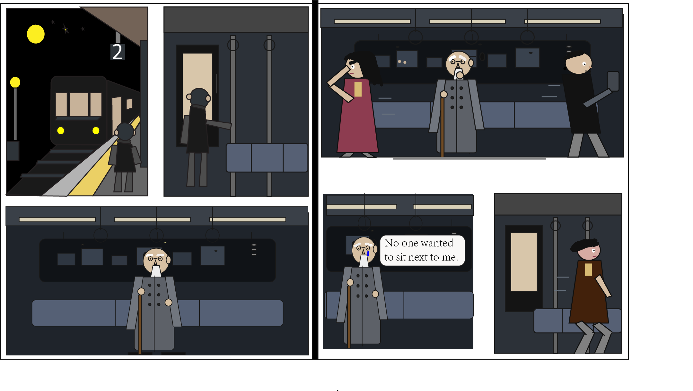

An elderly man is ignored on the subway, but in the end, through his own actions, he encourages others to join him in protecting the environment and stop being indifferent. I created this story because when I take the subway, I usually spend my time on my phone as well. One day, my phone died, and when I looked up, everyone around me was on their phones. It felt like indifference was all that remained between people. The core message I am trying to convey is to help each other more and be less indifferent.

Credits: images created by myself.